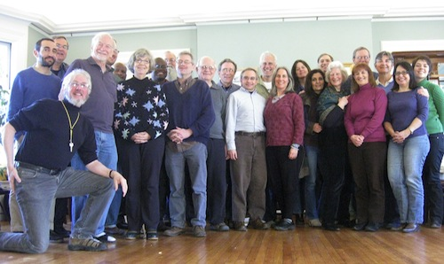

Dear Friends,
Do you know our next Executive Director?
The Fellowship of Reconciliation is in search of an Executive Director to lead the organization through the next generation of peace-building. We are looking for someone who will bring passion, experience, and a commitment to shared leadership to FOR and the movement we serve.
The new Director will find FOR with many strengths, including:
- a long and rich history of nonviolent activism, resistance to war, and anti-oppression work;
- a signature combination of, and commitment to, nonviolence and interfaith activism and grassroots organizing; and
- a clarity about and passion, shared by staff and members, for FOR’s vision.

FOR's new Executive Director will be coming on board at a time of transition and opportunity as FOR grapples with the realities of an aging membership, a tighter budget, and a desire to better integrate its diverse programmatic efforts into a common framework. The new Director must be willing to sign FOR’s Statement of Purpose and will be engaged in helping FOR with:
- redirecting FOR staff energies to a model focused on regional U.S. programming while capitalizing on technological resources;
- building fundraising capacity and resources to help FOR be more sustainable;
- strengthening support for staff, encouraging their gifts, and nurturing a culture of accountability and collaboration;
- expanding the diversity of its membership, racially and religiously, as well as growing the existing programming for youth and young adults;
- invigorating the grassroots and strengthening partnerships between local groups, religious peace fellowships, and the national office;
- helping the governing board, the National Council, with clarification of roles, training, and mutual accountability;
- exploring the location, usage, and economies of FOR’s headquarters in Nyack and of the outstation offices.
Strongly preferred:
- Minimum of five years as an executive director of a nonprofit organization with experience in administration, staff supervision, strategic planning, program evaluation, finance, and fundraising, or equivalent experience.
- Proven ability to work with people from a variety of ethnic, socioeconomic, educational, and religious backgrounds, generations, and sexual orientations in building a highly-motivated and diverse staff team.
- Record of successful fundraising and financial management with nonprofit agencies.
- Record of program experience and program oversight.
- Willing to relocate to Nyack, New York.
Compensation: Salary commensurate with experience, plus a generous benefit package.
Hours: Full-time.
Location: Headquartered in Nyack, New York; location negotiable.
Deadline for résumé and cover letter: March 25, 2013
More information about the Fellowship of Reconciliation:
The Fellowship of Reconciliation (FOR) was founded in 1914 to promote nonviolence as a means of resolving conflict and achieving justice and peace worldwide. Its intentionally interfaith approach to peace and justice make FOR uniquely positioned to address the world’s problems in the 21st century. FOR-USA serves as the U.S. national office for this international movement, and works with more than 10,000 members, 100 local groups, and over a dozen national religious peace fellowships.
The national headquarters is based in Rockland County, New York. Several national staff members are regionally based (in other parts of the Americas).
To apply:
Interested candidates should send a cover letter and résumé with three professional references by the March 25, 2013 deadline to: Ralph McFadden, Search Consultant, FORsearch@sbcglobal.net. For more information, contact Ralph McFadden on his home/office phone: 847-622-1677. Reference letters may be sent via email directly to McFadden. (Download a PDF version of the job posting.)
The Fellowship of Reconciliation is an equal opportunity employer and does not discriminate on the basis of race, color, religion, sex, age, national origin, physical or mental disability, or sexual orientation. |